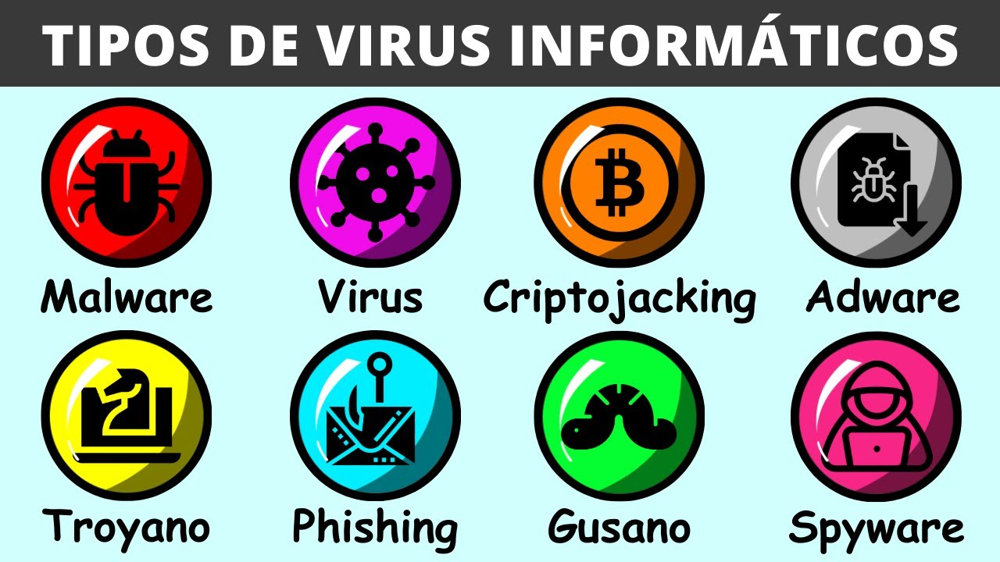

Introducción
En la actualidad, utilizamos dispositivos electrónicos e Internet para realizar muchas actividades, como estudiar, comunicarnos, buscar información y guardar archivos. Sin embargo, también existen diferentes amenazas que pueden poner en riesgo nuestros dispositivos y nuestra información.
Una de estas amenazas es el malware. Este término se utiliza para referirse a diferentes tipos de programas creados con intenciones maliciosas. En esta página conoceremos qué es el malware, cuáles son sus características, cómo funciona, qué consecuencias puede tener y cómo podemos protegernos frente a este tipo de amenazas.
¿Qué es malware?
El malware es un término que proviene de la combinación de las palabras malicious software, que significa "software malicioso". Se utiliza para nombrar a los programas creados para realizar acciones perjudiciales o no autorizadas en un dispositivo.
Existen diferentes tipos de malware y cada uno puede tener un funcionamiento y un objetivo diferente. Algunos pueden intentar robar información, otros pueden dañar archivos, controlar determinadas funciones del dispositivo o afectar su funcionamiento.
Entre los tipos de malware más conocidos se encuentran los virus, gusanos, troyanos, spyware y ransomware.
Características
- Puede realizar acciones sin el consentimiento del usuario.
- Puede afectar el funcionamiento de un dispositivo.
- Algunos tipos pueden propagarse entre dispositivos.
- Puede ocultarse para evitar ser detectado.
- Algunos pueden intentar obtener información personal.
- Existen diferentes tipos de malware con objetivos y comportamientos distintos.
funcionamiento
El malware puede ingresar a un dispositivo de diferentes maneras. Por ejemplo, puede encontrarse dentro de un archivo, programa, documento o enlace malicioso.
Una vez que consigue ejecutarse o instalarse, puede realizar diferentes acciones dependiendo del tipo de malware. Algunos pueden modificar archivos, otros pueden recopilar información y otros pueden intentar propagarse a otros dispositivos.
Por ejemplo, un usuario puede descargar un programa que parece seguro, pero que contiene malware. Al ejecutarlo, el programa malicioso puede comenzar a realizar acciones no deseadas en el dispositivo.
Por este motivo, es importante tener cuidado con los archivos que descargamos, los programas que instalamos y los enlaces que abrimos.
Tipos de malware
- Virus: programa malicioso que puede infectar archivos y propagarse cuando estos son ejecutados.
- Gusano: puede propagarse de un dispositivo a otro sin necesitar infectar un archivo de la misma manera que un virus tradicional.
- Troyano: se presenta como un programa aparentemente legítimo, pero realiza acciones maliciosas.
- Spyware: puede recopilar información sobre las actividades del usuario sin su conocimiento.
- Ransomware: puede bloquear o cifrar información y exigir algo a cambio para recuperar el acceso.

Conclusión
El malware es una de las principales amenazas dentro de la seguridad informática y engloba diferentes tipos de programas maliciosos. Cada uno puede tener características y objetivos diferentes, pero todos pueden representar un riesgo para los dispositivos y la información de los usuarios.
Conocer qué es el malware y cómo puede funcionar es importante para aprender a reconocer posibles amenazas y prevenir problemas de seguridad. Utilizar herramientas de protección, mantener los dispositivos actualizados y tener cuidado con los archivos, programas y enlaces que utilizamos son medidas importantes para reducir los riesgos.